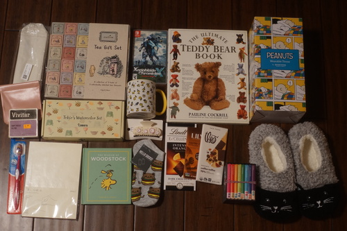
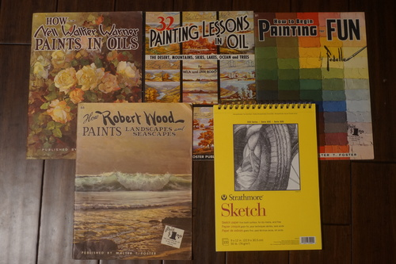
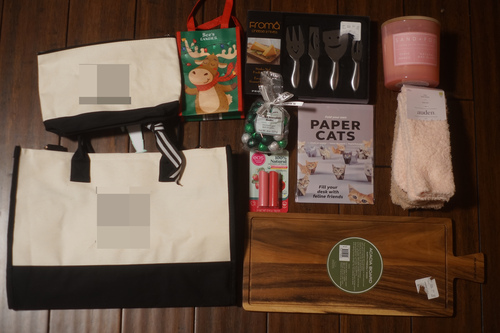

New year new journal, right?
I'm in my final pages of my Midori 3 year diary this year. I was hesitant to buy it years ago. 3 years is a big commitment! I made it through with an entry every single day (except February 29 twice). Sometimes they were written the next day but never far enough away that I didn't remember what happened that day (except the many days where I couldn't remember what happened the day of). Reading old entries is very enjoyable and the main reason to own one. The three year gives you 6 lines of space in an small sized journal which is not great if you have a lot to say. It is perfect for a quick summary of the day.
Earlier this year I was inspired by Orhan-Bey Pamuk-san's Memories of Distant Mountains. He paints in his journals, which I think is revolutionary! Wow!! I looked into the paper he is using and it's Moleskine. I took my paints to my tiny Moleskine notebook and... I have no idea how he does it. This paper is terrible. Awful. I have an old Leuchtturm planner so I tried painting in that. Okay! It's not perfect, but it can hold up WAY better than Moleskine.
I went to Barnes and Noble and bought a $11 Leuchtturm 2025 planner and have turned it into a total b*tchfest filled with animal paintings and funny trees. I really enjoyed having it and having it made summarizing the day in my Midori 3 year a lot easier. What I did not enjoy was the planner printing in it, which I was also ignoring. The next one I buy would need to be blank (or printed and severly discounted again). I got a Midori A5 blank back in November and confirmed it could take watercolor like Leuchtturm paper can.
I slapped a new Midori 3 Year on my birthday/Christmas list along with another Midori A5 blank notebook. I received the blank notebook but not the 3 Year. I took a minute to consider if I should buy the 5 or 10 Year instead. The 5 Year is the same size, but has 4 lines of space per day instead of 6. That's too little for a single diary, but when paired with a second, should be fine. The 10 year is twice as large as the 3 and 5 year journals, with the same layout as the 5 day over 2 pages. Twice the wight is what convinced me out of the 10 Year. I also haven't seen any proof the book will hold up through 10 years of use!
I rushed to buy the 5 Year and it's sold out on JetPens and up to 1 month shipping from Amazon. Well, we'll see my new diary sometime next month ._. I'm really bummed.
I haven't about my JetPens experience yet! I send out my defective nib on November 18 with a prepaid shipping label, it arrived to them November 24, and they sent the replacement November 26 after confirming my address and testing the replacement. JetPens says they only process returns once a week, so I was very lucky they did it before Thanksgiving! The replacement nib arrived December 1st. They returned it in the same nib case I sent to them.
The new nib is not malformed and feels smooth like the one I tested in person. It has a bit of a hard start problem, which could be baby's bottom, but I think it's more likely the tines are just slightly too far apart. LAMY's quality sure feels questionable. I don't know if I would buy another gold nib from them without testing it in person.
Did you know Lamy was bought out by Mitsubishi in February 2024? I sure didn't until last month!

The long awaited "Christmas Haul"...
  

I celebrated Veronie's half a little while ago. Half my life spent with him!! Smoochies~!!!!


My card from Maullar arrived too! It's Miyu this year!